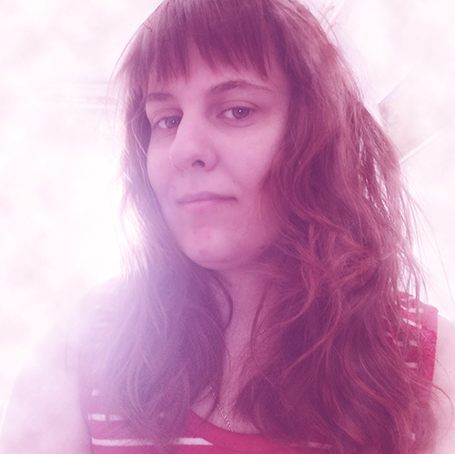

About me

I started teaching myself photography in 2006, and a few years later I got my first DSLR camera. I currently take photos as a hobby in the categories of nature, macro and animals. I've always liked IT, but I preferred to study as a media technology assistant, which I didn't really like in the end. I learned Webdevelopment and Python (basics) from several websides from 2021. In fact I already taught myself the HTML and CSS. That's how I had my own website between 2012 and 2014. I would like to learn C#, C++ programming languages and I would also like to learn Python programming language better. Self-learning isn't an obstacle for me, and I have a desire to improve.
Experience
- 2019 Lira Zrt. (Bp.) Order Administrator; compilation of book orders.
- 2012 – 2014 Freelance (HO) Graphic Design Artist; graphic arts created based on my own ideas with Adobe Photoshop.
- 2011 Tilos Radio (Bp.) Media Technologist Assistant internship; radio practice and radio broadcasting technique.
- 2011 ESTV (Vac) Media Technologist Assistant internship; getting to know a studio, recording techniques and cutting recorded video materials.
- 2010 Furge Diak Iskolaszovetkezet (Godollo) Student Job; passenger counter on Tura bus service (Tura – Budapest route).
Projects
- 2022 – 2023 Projects for the FCC
- 2021 - ... JavaScript vs. Python JS practice codes rewrite in own Python codes.
- 2020 - ... HTML+CSS Projects Hidden projects on GitHub (for now).
- 2012 – 2014 Creating & Maintaining My Own Website My old domain names: nixitn.hu & nixitnart.net.
Education
- 2022 – 2023 FreeCodeCamp Scientific Computing with Python, JavaScript Algorithms and Data Structures, Responsive Web Design
- 2021 – 2022 Udemy Python (basics) and Web developer (basics)
- 2021 Ujratervezes Program Web developer (basics)
- 2010 – 2012 Szent Gyorgy Media és Informatikai Szakkozepiskola Media Technologist Assistant, unfinished
- 2006 – 2010 Gabor Denes Ovoda, Altalanos Iskola, Gimnazium es Szakkozepiskola Informatics and graduation
Skills
- Adobe Photoshop, Adobe Illustrator, Adobe Lightroom, Photography, Drawing, Graphic
- WebDesign, HTML+HTML5, CSS, JavaScript, Python, MYSQL, SQL, Database, WordPress, GitHub, SQLite, API, JSON, Edge, Google Chrome, MS Visual Studio Code, Adobe Dreamweaver
- Self-Learning, Desire to Develop, Problem-Solving, Administration, Translation from English to Hungarian, MS Office, Google Docs, Computer Maintenance (not at high system administrator level), Informatics
- Languages: Hungarian (native), English (intermediate level)
Additional Areas of Interest
Learning Programming Languages (Python, C#, C++), 3D Art, CGI, VFX, Game Development.